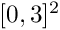

|
p4est 2.8.5.190-3fcf-dirty
p4est is a software library for parallel adaptive mesh refinement.
|
The p4est library comes with various example programs.
They are kept under the subdirectory example. Most have both a 2D and a 3D version. When the library is configured --enable-mpi, they can all be run in parallel on any number of MPI ranks, even on small computers.
One first helpful program to try out is called p4est_simple (2D version) and p8est_simple (3D version), both under simple. We showcase some results further below on this page, and we encourage everyone to play with the command line arguments.
Quite some time later, we created a range of step-by-step examples under steps. Let us begin here with the first one that generates a mesh spelling 'Hello, World!': steps/p4est_step1.c.
This program performs refinement on a simple domain based on hardcoded image data. As a result, the output VTK file displays the phrase 'Hello World' by the mesh refinement.
Usage may be one of:
p4est_step1or with MPI:mpirun -np 3 p4est_step1
Another illustrative example can be found in simple/simple2.c. The refinement pattern is generated by some hardcoded prescriptions based on a quadrant's tree number, refinement level and coordinates. Please see the documentation under that link for a full list of configurations.
This program creates/refines & coarsens/balances/partitions one of several available geometries specified on the command line. As a result, the output VTK files document all the steps of the mesh manipulation process.
Example: periodic
Create a connectivity structure for a periodic unit square. The left and right faces are identified, and bottom and top opposite.
Usage:
p4est_simple periodic 5or with MPI:mpirun -np 4 p4est_simple periodic 5
Example: circle
Create a connectivity structure for an donut-like circle. The circle consists of 6 trees connecting each other by their faces. The trees are laid out as a hexagon between in the y direction and in the x direction. The hexagon has flat sides along the y direction and pointy ends in x.
Usage:
p4est_simple circle 5or with MPI:mpirun -np 4 p4est_simple circle 5
Example: drop
Create a connectivity structure for a five-trees geometry with a hole. The geometry covers the square , where the hole is .
Usage:
p4est_simple drop 5or with MPI:mpirun -np 7 p4est_simple drop 5
Example: moebius
Create a connectivity structure for a five-tree moebius band.
Usage:
p4est_simple moebius 5or with MPI:mpirun -np 4 p4est_simple moebius 5